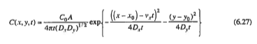
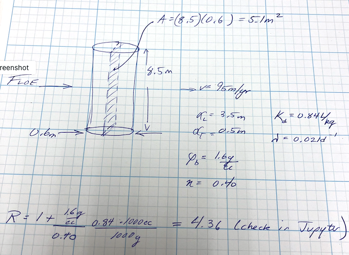

F23 Exam 1 Solution Sketch#
LAST NAME, FIRST NAME
R00000000
Purpose :#
Demonstrate ability to apply principles of groundwater contaminant transport
Additional Instructions#
The test is intended to be completed on blackboard. The questions below are transcribed to BB as (in general) file response questions or in the short answer part, as essay response.
Problem 0#
Short answer questions:
0.1#
Describe how to use the areal extent of a groundwater contaminant plume with a known source to estimate the local groundwater velocity.
Estimating local groundwater velocity using the areal extent of a groundwater contaminant plume with a known source involves some hydrogeological principles and mathematical calculations. This method assumes that the contaminant plume is expanding in a direction perpendicular to groundwater flow. Here are the steps to estimate groundwater velocity using this approach:
Data Collection:
Gather all available data related to the contaminant plume and the source. This should include the spatial and temporal extent of the plume, the source location, and the concentration of the contaminant at various monitoring points.Determine the Plume Movement Direction:
Analyze the data to understand the movement direction of the contaminant plume. Typically, a contaminant plume spreads perpendicularly to groundwater flow. In most cases, this direction can be assumed to be perpendicular to the groundwater flow.Select Monitoring Points:
Choose at least two monitoring points along the perpendicular axis to the groundwater flow direction. These points should have accurate groundwater monitoring data, including the depth to the water table.Estimate the Time of Travel:
Calculate the time it took for the contaminant plume to travel from the source to the chosen monitoring points. This can be determined from the historical data, assuming the contaminant plume is advecting with the groundwater flow.Determine the Distance of Travel:
Measure the distance between the source and the monitoring points. This distance should be measured perpendicular to the assumed groundwater flow direction.Calculate Groundwater Velocity:
Use the following equation to estimate the groundwater velocity:
Velocity (v) = Distance (d) / Time (t)
Where: Velocity (v) is the groundwater velocity. Distance (d) is the distance between the source and monitoring point perpendicular to groundwater flow. Time (t) is the time it took for the plume to travel from the source to the monitoring point.Repeat and Average:
If you have data from multiple monitoring points, calculate the groundwater velocity for each point and then average them to get a more reliable estimate.Assess Uncertainty:
Be aware that this method makes several simplifying assumptions. The accuracy of your estimate may be influenced by factors such as heterogeneity in the aquifer, dispersion, and the actual groundwater flow direction. Be sure to assess and report the uncertainty in your velocity estimate.Validate the Estimate:
Compare the estimated groundwater velocity to any available independent measurements or models to validate the accuracy of your estimate.Use the Estimate:
Once you have a reasonably accurate estimate of the groundwater velocity, you can use this information for various purposes, such as contaminant transport modeling, remediation planning, or regulatory compliance.
Keep in mind that this method provides an approximation of local groundwater velocity and may not be as accurate as more direct methods like tracer tests or pumping tests. It is important to consider the limitations and uncertainties associated with this approach when making decisions based on the estimated velocity.
0.2#
List four transport mechanisms that affect solute migration in groundwater flow.
Solute migration in groundwater flow is influenced by various transport mechanisms. Four key transport mechanisms that affect solute migration in groundwater are:
Advection: Advection is the dominant mechanism of solute transport in groundwater. It occurs when solutes are transported along with the bulk movement of groundwater. Advection is responsible for the downstream movement of contaminants and can transport solutes over significant distances in a relatively short time.
Dispersion: Dispersion refers to the spreading or mixing of solutes as they move through porous media due to velocity variations within the groundwater flow. It results from the interactions between the solute and the porous matrix, and it leads to a spreading of the solute plume over time. Longitudinal dispersion (along the flow direction) and transverse dispersion (perpendicular to the flow direction) are common types of dispersion.
Diffusion: Diffusion is the process by which solutes move from areas of higher concentration to areas of lower concentration, driven by concentration gradients. In groundwater, diffusion operates at the pore scale, and it can be a significant factor for solute migration in low-permeability formations or in areas where advection is limited.
Matrix Diffusion: Matrix diffusion occurs when solutes migrate into and out of the solid matrix of the porous media. This process is particularly important in geologic formations with low-permeability zones, such as clays and shales. Solute molecules can temporarily adsorb to the solid matrix, slowing their movement through the groundwater system.
These transport mechanisms interact and can vary in significance depending on the hydrogeological properties of the subsurface and the specific solute being transported. Understanding the interplay of these mechanisms is essential for accurate modeling and management of groundwater contaminants.
0.3#
Why are dispersivity values small (~ centimeters) for laboratory column tests and large (~ decameters) for field transport modeling?
The difference in dispersivity values between laboratory column tests and field transport modeling can be attributed to the scale and the complex nature of subsurface environments. Here’s why dispersivity values tend to be small in laboratory column tests and large in field transport modeling:
Scale Effect:
Laboratory Column Tests: In laboratory settings, experiments are conducted on a small scale, often involving relatively uniform and controlled conditions. The porous media in a laboratory column are typically homogenous and well-mixed, and the flow velocities are low. Under such conditions, the physical and chemical processes influencing dispersion are more predictable and limited in their impact, leading to smaller dispersivity values.
Field Transport Modeling: In the field, groundwater flow occurs through heterogeneous and geologically complex formations. These formations may include a variety of grain sizes, fractures, and other subsurface heterogeneities. This heterogeneity causes significant variability in groundwater flow rates, resulting in higher dispersivity values due to the more irregular pathways and mixing that solutes experience at larger scales.
Macroscopic vs. Microscopic Transport: In laboratory column tests, the focus is often on macroscopic transport processes, where the impact of heterogeneity is minimized or controlled. The porous media in a column may be carefully packed to be more uniform. In field transport modeling, the transport occurs on a macroscopic scale where solutes encounter numerous preferential flow paths and barriers due to geological heterogeneity. This leads to a much broader range of flow velocities and dispersivity values.
Hydrogeological Factors: In the field, geological structures like fractures, faults, and stratigraphy can significantly influence groundwater flow and dispersion. These natural features can cause solutes to migrate over much larger distances before reaching a monitoring well, leading to larger dispersivity values. In a laboratory column, the absence of these geological features and the controlled nature of the setup minimize the potential for long-distance solute migration and, consequently, result in smaller dispersivity values.
Time and Distance Scales: Laboratory column tests are conducted over shorter time and distance scales, which may not allow for the development of large dispersivity values. Field transport modeling encompasses longer time and distance scales, allowing more time for solutes to disperse over larger areas, leading to larger dispersivity values.
It’s important to note that laboratory column tests are valuable for studying certain aspects of solute transport and can provide insights into the behavior of contaminants in controlled environments. However, they may not fully capture the complexity of solute transport in the field, which is influenced by the natural heterogeneity and scale of subsurface systems. Consequently, field transport modeling typically requires larger dispersivity values to account for the broader range of transport processes that occur in the real-world subsurface environment.
0.4#
List four soil characteristics that affect sorption in groundwater solute transport.
Sorption is the process by which solutes are adsorbed onto the surfaces of soil and sediment particles as they migrate through the subsurface. Several soil characteristics influence sorption in groundwater solute transport. Four key soil characteristics that affect sorption are:
Cation Exchange Capacity (CEC): Cation exchange capacity refers to the ability of soil or sediment particles to adsorb and exchange cations (positively charged ions). Soils with a higher CEC tend to have a greater capacity to sorb cations from groundwater. This property is influenced by the presence of clay and organic matter, which typically have higher CEC compared to sand or silt.
Surface Area: The specific surface area of soil particles, especially clay and organic matter, plays a crucial role in sorption. Larger surface areas provide more opportunities for solute molecules to come into contact with soil particles, leading to increased sorption capacity. Clays and organic matter typically have higher specific surface areas compared to sand and silt.
Mineral Composition: The mineral composition of soil affects sorption because different minerals have varying affinities for different solutes. For example, certain minerals like iron oxides and aluminum oxides can strongly sorb contaminants such as heavy metals. The presence of specific minerals in the soil can significantly impact the sorption behavior of solutes.
Organic Carbon Content: Organic carbon content, often found in the form of humic and fulvic acids, can play a significant role in sorption. Organic matter in the soil can act as an adsorption site for organic contaminants, and it can also affect the sorption of inorganic compounds through complexation and other mechanisms. Soils with higher organic carbon content tend to exhibit stronger sorption of many organic solutes.
These soil characteristics collectively determine the sorption capacity and affinity of a given soil or sediment for various solutes. Understanding these characteristics is crucial when assessing the fate and transport of contaminants in groundwater, as they impact how much of a solute will be retained by the subsurface as it moves through the aquifer.
0.5#
Define natural attenuation as applied in groundwater contamination studies
Natural attenuation, in the context of groundwater contamination studies, refers to a set of naturally occurring processes and mechanisms by which contaminants are reduced, immobilized, or otherwise transformed in the subsurface environment without the need for human intervention or engineered remediation techniques. It is a cost-effective and sustainable approach for managing groundwater contamination over time.
Key components and processes involved in natural attenuation include:
Biological Degradation: Microorganisms in the subsurface can naturally break down contaminants through various metabolic processes. This often involves the use of organic contaminants as a carbon source, resulting in the conversion of the contaminants into less harmful or less mobile forms. Common processes include aerobic and anaerobic biodegradation.
Sorption: Contaminants can be sorbed (adsorbed or absorbed) onto soil and sediment particles, reducing their mobility in the groundwater. Sorption processes can vary depending on the type of contaminant and the properties of the subsurface materials.
Dilution: Over time, groundwater flow can naturally dilute the concentration of contaminants as they mix with cleaner groundwater. This process is particularly relevant when contaminants are introduced from a localized source.
Chemical Reactions: Certain chemical reactions can transform contaminants into less harmful forms. For example, reactions involving redox (reduction-oxidation) processes can convert toxic compounds into more benign substances.
Volatilization: Some volatile contaminants can naturally vaporize into the air when they come into contact with the water table, reducing their presence in groundwater.
Physical Processes: Physical processes such as dispersion and diffusion can contribute to the natural attenuation of contaminants by spreading them out and reducing their concentration over time.
The effectiveness of natural attenuation depends on various factors, including the type and concentration of contaminants, the hydrogeological characteristics of the subsurface, and the presence of reactive materials (e.g., organic carbon, iron oxides) that can facilitate attenuation processes.
Natural attenuation is often considered as a strategy for managing groundwater contamination, particularly when the risks to human health and the environment are low or when contaminants are expected to naturally degrade over time. It is typically used in combination with ongoing monitoring to ensure that natural processes are effectively reducing contaminant concentrations to acceptable levels without posing a risk to receptors.
0.6#
How does one determine the principal values of the hydraulic conductivity tensor (in 2D)?
In a two-dimensional (2D) subsurface environment, the hydraulic conductivity tensor is a fundamental parameter used to describe the anisotropic nature of groundwater flow. The tensor represents the hydraulic conductivity of the aquifer in different directions. To determine the principal values of the hydraulic conductivity tensor in 2D, you can follow these steps:
Define the Coordinate System: Establish a coordinate system that aligns with the principal directions of the aquifer. In 2D, you typically have two orthogonal axes: one for the primary direction and one for the secondary direction.
Collect Data: Gather data from various sources, including aquifer tests, pump tests, and hydraulic conductivity measurements from monitoring wells. These data should include information about groundwater flow and hydraulic conductivity in different directions.
Choose Two Orthogonal Directions: In a 2D system, you’ll choose two orthogonal directions to represent the primary and secondary flow directions. These directions are typically along the x-axis and y-axis of the coordinate system.
Transform the Data: Transform the hydraulic conductivity data to fit the chosen coordinate system. If the data is given in a different coordinate system, you may need to apply mathematical transformations to express the hydraulic conductivity values in the selected directions.
Perform Principal Value Analysis: Use statistical or mathematical techniques, such as a principal component analysis, to determine the principal values of the hydraulic conductivity tensor. This analysis will provide the values of hydraulic conductivity along the primary and secondary directions.
Interpret the Results: The principal values represent the hydraulic conductivity along the major and minor axes of the aquifer. The larger principal value corresponds to the direction of higher hydraulic conductivity (primary direction), while the smaller principal value corresponds to the direction of lower hydraulic conductivity (secondary direction).
Use the Tensor Information: Once you have determined the principal values, you can use this information in groundwater flow and transport modeling. It allows you to account for the anisotropic nature of the aquifer and make more accurate predictions of groundwater flow and solute transport.
It’s important to note that the hydraulic conductivity tensor in 2D represents a simplified representation of the subsurface, and aquifer anisotropy can be more complex in three-dimensional (3D) systems. In 3D, you would have three principal values for the hydraulic conductivity tensor, and the analysis would be more complex. In such cases, the principal values describe the hydraulic conductivity in the primary, secondary, and tertiary directions.
0.7#
What is the practical significance of anisotropy in groundwater contaminant studies?
Anisotropy in groundwater contaminant studies, where the subsurface’s properties and behavior vary in different directions, has several practical significances that influence the assessment, management, and remediation of groundwater contamination. Here are some key practical aspects:
Directional Variation in Contaminant Movement: Anisotropy can lead to directional variations in hydraulic conductivity, which, in turn, affect the direction and rate of groundwater flow. This impacts the movement of contaminants, leading to preferential flow pathways and dispersion patterns. Understanding these variations is crucial for predicting the spatial and temporal behavior of contaminants in the subsurface.
Enhanced or Reduced Migration Potential: Anisotropy can result in areas with enhanced or reduced migration potential for contaminants. In highly anisotropic aquifers, there may be zones with significantly higher or lower hydraulic conductivity along different axes. Contaminants can migrate more rapidly along the direction of higher hydraulic conductivity, potentially increasing the risk to receptors in those areas.
Complex Plume Shapes: Contaminant plumes in anisotropic aquifers can exhibit complex shapes due to variations in flow velocity and dispersion. Plumes may elongate along the axis of higher hydraulic conductivity and be constrained along the axis of lower conductivity. Understanding these shapes is critical for designing effective remediation strategies.
Influence on Remediation Design: Remediation strategies, such as groundwater extraction and treatment or in-situ remediation, need to consider the anisotropic nature of the subsurface. Treatment systems may need to be strategically located and oriented to target areas of higher contaminant concentration or enhanced flow.
Risk Assessment and Exposure Modeling: Accurate risk assessments and exposure modeling require an understanding of how contaminants move through anisotropic aquifers. Failure to account for anisotropy can lead to inaccurate predictions of contaminant plume behavior and potential risks to human health and the environment.
Optimizing Well Placement: When installing monitoring wells or extraction wells, anisotropy must be considered to ensure that they are placed strategically to capture or manage the contaminant plume effectively. Well placement that aligns with the principal directions of anisotropy can significantly impact the success of site assessment and remediation efforts.
Predicting Long-Term Behavior: Anisotropy also plays a role in predicting the long-term behavior of contaminant plumes. Variations in flow rates, dispersion, and the effectiveness of natural attenuation can affect the rate at which contaminants attenuate or migrate through the subsurface.
In summary, anisotropy in groundwater contaminant studies is practically significant because it introduces complexities and spatial variations that impact the migration and behavior of contaminants in the subsurface. Understanding and properly accounting for anisotropy are essential for accurate site characterization, risk assessment, and the design of effective remediation strategies.
0.8#
What is the retardation coefficient?
The retardation coefficient, often denoted as “R,” is a hydrogeological parameter used to describe the degree of retardation or delay in the movement of contaminants in groundwater due to sorption or adsorption processes. It quantifies how much slower a contaminant travels through the subsurface compared to the groundwater flow velocity. The retardation coefficient is a critical parameter in groundwater contaminant transport modeling and is used to assess the behavior of contaminants in porous media.
The retardation coefficient is typically defined as the ratio of the average groundwater velocity (\(V_g\)) to the average velocity at which a contaminant travels through the porous medium (\(V_c\)):
Here’s what the terms in the equation represent:
\(R\): Retardation coefficient, a dimensionless number.
\(V_g\): Average groundwater velocity, which represents the rate of water movement in the aquifer.
\(V_c\): Average velocity of the contaminant through the porous medium, accounting for sorption or adsorption processes.
A retardation coefficient greater than 1 (R > 1) indicates that the contaminant is traveling more slowly through the porous medium than the groundwater. This means that the contaminant is being retarded or delayed due to sorption, which can be caused by processes such as adsorption to soil particles, absorption into organic matter, or chemical reactions with solid phases.
The retardation coefficient is an essential parameter in predicting the transport and fate of contaminants in groundwater, particularly when assessing the potential for groundwater contamination from point sources, such as leaking underground storage tanks or landfills. It helps in estimating the degree of contaminant attenuation and the distance a plume may travel, which is critical information for assessing and managing groundwater contamination.
0.9#
List four common concentration units
Concentration units are used to express the amount of a substance dissolved or contained within a given volume or mass of a solution or mixture. Here are four common concentration units:
Molarity (M): Molarity is a measure of the concentration of a solute in a solution. It is defined as the number of moles of solute per liter of solution. The unit for molarity is moles per liter (mol/L).
Mass Concentration (Mass/Vol or g/L): Mass concentration, also known as mass/volume concentration, expresses the amount of a solute (in grams) dissolved in a specific volume (in liters) of a solution. The unit for mass concentration is typically grams per liter (g/L).
Mole Fraction (X): Mole fraction is a dimensionless measure of concentration that represents the ratio of the number of moles of a particular component to the total number of moles in a mixture. It is often expressed as a decimal or fraction and has no specific unit.
Parts Per Million (ppm) and Parts Per Billion (ppb): Parts per million and parts per billion are used to express extremely low concentrations of a substance in a solution. For ppm, one part is equivalent to one milligram per liter (mg/L) in a million parts of the solution. For ppb, one part is equivalent to one microgram per liter (µg/L) in a billion parts of the solution.
These concentration units are widely used in various fields, including chemistry, environmental science, biology, and industry, to quantify the amount of solutes in solutions, mixtures, and other substances.
0.10#
What is the most common chemical contaminant in the world’s groundwater and aquifers?
The most common chemical contaminant in the world’s groundwater and aquifers is nitrate (NO3-). Nitrate contamination in groundwater primarily arises from various human activities, particularly the use of nitrogen-based fertilizers in agriculture, industrial discharges, and improper management of sewage and septic systems. When nitrate-containing compounds are applied to the land or released into the environment, they can percolate through the soil and reach the groundwater, leading to elevated nitrate levels.
Nitrate contamination in groundwater is a significant concern due to its potential health impacts. High nitrate concentrations in drinking water can lead to a condition called methemoglobinemia, often referred to as “blue baby syndrome,” in infants. This condition reduces the blood’s ability to carry oxygen and can be life-threatening.
Additionally, nitrate contamination in groundwater can contribute to the formation of nitrite and nitrosamine compounds, which are known carcinogens. Long-term exposure to nitrate-contaminated water can pose health risks to humans.
Efforts to manage and mitigate nitrate contamination in groundwater include monitoring, regulatory controls on fertilizer use, improved agricultural practices, and water treatment to reduce nitrate levels in drinking water supplies. It’s important to address nitrate contamination to protect both human health and the quality of groundwater resources worldwide.
Problem 1 (Problem 2-8, pg. 578)#
The figure below shows a piezometric map for a shallow sand aquifer with a saturated thickness of 50 ft. The hydraulic conductivity is estimated to be \(42~\frac{ft}{day}\).

Determine:
Which well is expected to be the most contaminated.
The groundwater velocity and seepage velocity across the plume.
The duration that the source has been contaminating the aquifer (neglect dispersion, diffusiom, and adsorption).
The flow rate across the plume.
An explaination for contamination upgradient of the source zone.
list known quantities#
Head map (provided)
\(b~\approx~40~feet\)
\(K~\approx~ 1.5 \times 10^{-2}~\frac{cm}{s} \cdot \frac{1~in}{2.54~cm} \cdot \frac{1~ft}{12~in} \cdot \frac{86400~s}{1~day} = 42.52~\frac{ft}{day}\)
\(n~\approx~ 0.30 \)
list unknown quantities#
Which well is expected to be the most contaminated.
The groundwater velocity and seepage velocity across the plume.
The duration that the source has been contaminating the aquifer (neglect dispersion, diffusiom, and adsorption).
The flow rate across the plume.
An explaination for contamination upgradient of the source zone.
governing principles#
Darcy’s law; \(Q=KA\frac{dh}{dl}\)
Definition(s) of discharge and seepage velocity
solution details (e.g. step-by-step computations)#
Which well is expected to be the most contaminated.
If release is ongoing, probably well A in annotated map below.
If release is “past history” then probably well M near middle of the plume.
The groundwater velocity and seepage velocity across the plume.
See annotated map below.
Gradients near well A and well M are calculated directly on the map annotations.
Specific discharge values:
\(q_{near~well~A} = \frac{Q}{A} _{near~well~A}~\approx~45.52\frac{ft}{day}(0.0014)= 0.0637 \frac{ft}{day}\)
\(q_{near~well~M} = \frac{Q}{A} _{near~well~M}~\approx~45.52\frac{ft}{day}(0.00125)= 0.0569 \frac{ft}{day}\)
A reasonable average is \(q = \frac{Q}{A} _{average}~\approx~0.06 \frac{ft}{day}\)Species (seepage) velocity is
\(U=\frac{q}{n} = \frac{1}{n} \frac{Q}{A} = \frac{1}{0.3} 0.06 \frac{ft}{day} = 0.2 \frac{ft}{day}\)
The duration that the source has been contaminating the aquifer (neglect dispersion, diffusiom, and adsorption).
Choose a reasonable pathline like the one on the drawing below and measure its length, then using definition of velocity, solve for duration.
Pathline is \(\approx~925~feet\)
\(t=\frac{x}{U}= \frac{925}{0.02} = 4625~days\)
The flow rate across the plume.
Apply Darcy’s law
\(Q=qA=0.06 \frac{ft}{day} \cdot 325 ft \cdot 40 ft = 780 \frac{ft^3}{day}\)
An explaination for contamination upgradient of the source zone.
Dispersion/diffusion of constituients, and/or
The regional water table is not static and at some point in past, gradient was in Easterly direction.
discussion#
The non-static water table is very likely, and quarterly moniroting is a usual standard to detect and account for seasonal/temporal variability.
Problem 2 (Problem 2-9, pg 578)#
Two observation wells 1700 meters apart have been constructed in a confined aquifer with spatially variable hydraulic conductivity as shown below:

The flow rate is 0.008 \(\frac{m^3}{hr}\) per unit width (into the plane of the figure) of aquifer. Well 1 is drilled into soil A which has hydraulic conductivity \(K = 13 \frac{m}{d}\). Well 2 is drilled into soil B which has hydraulic conductivity \(K = 9 \frac{m}{d}\). Soil zone B is between the wells as shown, 600 meters from Well 1 and 300 meters from Well 2. The potentiometric surface is 6 meters above the upper confining unit in Well 1 and 2.5 meters above the upper confining unit in Well 2.
Determine:
Hydraulic conductivity in Soil B
Sketch the hydraulic grade line (HGL) from Well 1 to Well 2; clearly indicate the changes in slope in each part of the HGL.
Solution:
KA=13 #m/d
KC= 9 #m/d
Q = 0.008*24 #m^3/d
w = 1 #m
b = 18 #m
gradhA = -Q/(KA*b*w)
gradhC = -Q/(KC*b*w)
print("gradhA :",round(-gradhA,3))
print("gradhC :",round(-gradhC,3))
hab = 6.0+gradhA*600
hbc = 2.5-gradhC*300
print("hab :",round(hab,3)," meters")
print("hbc :",round(hbc,3)," meters")
KB = -Q/(b*w*((hbc-hab)/800))
print("KB :",round(KB,3)," meters/day")
gradhA : 0.001
gradhC : 0.001
hab : 5.508 meters
hbc : 2.856 meters
KB : 3.218 meters/day
Problem 3 (Problem 2-12, pg. 579)#
Three geologic formations overlie one another with the characteristics listed below.
A constant velocity vertical flow field exists across the three formations. The hydraulic head at the top of the formations (top of formation 1) is 33 feet. The hydraulic head at the bottom of the formations (bottom of formation 3) is 21 feet.
Determine:
Sketch the system.
The hydraulic head at the internal boundary between formation 1 and 2.
The hydraulic head at the internal boundary between formation 2 and 3.
sketch#

list known quantities#
Thickness, hydraulic conductivities, porosities and heads as shown on sketch above.
list unknown quantities#
H at 1-2 interface.
H at 2-3 interface.
Time for tracer to traverse entire formation
governing principles#
Darcy’s law by layer
velocity = q/n
time = thickness/velocity
# Find total discharge per unit area through entire formation
htop=33
hbot=21
k1=0.0002
k2=0.000005
k3=0.001
l1=50
l2=20
l3=210
n1=0.30
n2=0.42
n3=0.35
Kbar=(l1+l2+l3)/((l1/k1) + (l2/k2) + (l3/k3))
print("vertical composite Kv: ",round(Kbar,6)," ft/sec")
dH=htop - hbot
dl = l1+l2+l3
qt=Kbar*dH/dl
print("vertical hydraulic gradient :",round(dH/dl,6)," ft/ft")
print("vertical specific discharge q: ",round(qt,6)," ft/sec")
vertical composite Kv: 6.3e-05 ft/sec
vertical hydraulic gradient : 0.042857 ft/ft
vertical specific discharge q: 3e-06 ft/sec
# find head loss in layer 1
dh1 = l1*qt/k1
h12 = htop -dh1
print("head at layer 1-2 interface :",round(h12,2)," ft ")
head at layer 1-2 interface : 32.33 ft
# find head loss in layer 2
dh2 = l2*qt/k2
h23 = htop - dh1 -dh2
print("head at layer 2-3 interface :",round(h23,2)," ft ")
head at layer 2-3 interface : 21.57 ft
# time in layer 1
time1 = l1*n1/qt
print("tracer time in layer 1 :",round(time1,6)," sec")
tracer time in layer 1 : 5575000.0 sec
# time in layer 2
time2 = l2*n2/qt
print("tracer time in layer 2 :",round(time2,6)," sec")
tracer time in layer 2 : 3122000.0 sec
# time in layer 3
time3 = l3*n3/qt
print("tracer time in layer 3 :",round(time3,6)," sec")
tracer time in layer 3 : 27317500.0 sec
totaltime=time1+time2+time3
totaltime=totaltime/86400
print("Tracer travel time :",round(totaltime,3)," days ")
Tracer travel time : 416.834 days
Problem 4 (Problem 6-4 pg. 588)#
Match the breakthrough curves given in the diagram with the appropriate description given below. Curves represent responses to the injection of a tracer in 1-D soil columns. Choose the best match for each case.
Curve for a 1-D continuous injection where the constituients get sorbed to the medium
Curve for a 1-D continuous injection with plug flow is observed
Curve for an instantaneous source with longitudinal dispersion
Curve for an instantaneous source with no dispersion
Curve for a 1-D continuous injection with longitudinal dispersion
Curve for a 1-D continuous injection with longitudinal dispersion and biodegredation
Curve for a 1-D continuous injection in which a fracture existed along the soil column
Curve for a 1-D continuous injection where the constituients get sorbed to the medium Curve F - the median relative concentration at (C/C0 = 0.5) at greater then one pore volume is the clue; retains similar shape as C
Curve for a 1-D continuous injection with plug flow is observed. Curve E - the sharp interface at one pore volume is the clue.
Curve for an instantaneous source with longitudinal dispersion. Curve B - the peak relative concentration at (C/C0 = max) at one pore volume is the clue, along with symmetric spreading ahead snd behind.
Curve for an instantaneous source with no dispersion. Curve G - this curve is not plotted, but would be a “spike” at one poer volume.
Curve for a 1-D continuous injection with longitudinal dispersion Curve C - the median relative concentration at (C/C0 = 0.5) at one pore volume is the clue.
Curve for a 1-D continuous injection with longitudinal dispersion and biodegredation Curve D - Similar shape as C butreduced concentrations, and equilibrium profile never gets to C0.
Curve for a 1-D continuous injection in which a fracture existed along the soil column. Curve A - the early arrival of median relative concentration at (C/C0 = 0.5) at less than one pore volume is a clue.
Problem 5 (modified from Problem 6-24 pg. 592)#
A tank storing various liquids leaks over an area of 10 m\(^2\) into an aquifer. One constituient of concern is benzene that is released at a concentration of 10,000 \(\frac{\mu~g}{L}\). Assume the aquifer exhibits a retardation factor for benzene of 2.0, and benzene experiences first-order degredation with a decay coefficient \(\lambda~=\frac{0.0005}{day}\); the longitudinal dispersion coefficient is \(D_l = 1 \frac{m^2}{day}\), the transverse dispersion coefficient is \(D_t = 0.1 \frac{m^2}{day}\), the seepage velocity (in longitudinal direction) is \(u = 1.0 \frac{m}{day}\).
Determine:
Time required for the release to traverse 75 meters (ignoring dispersion and degredation)
Peak concentration at 75 meters
Approximate plume longitudinal and transverse dimensions at 365 days
Time to 75 m#
Following example 6.2 in textbook
set \(x=75\) and solve for \(t\)
distance = 75 #m
velocity = 1.0 #m/day
retardation = 2.0 #given
timet075 = distance*retardation/velocity
print("time to 75 meters :",round(timet075,3)," days")
time to 75 meters : 150.0 days
Peak at 75 meters#
Could simply ploat a history at \(x=75\) meters and capture the peak value
point source spill; use Equation 6.27 in book , modify for decay

solution details (e.g. step-by-step computations)#
Create a prototype function
def c3addinst(x,y,z,t,m,dx,dy,dz,v,lm):
# Baetsle 1969 model eq. 6.28
import math
term0 = math.exp(-1.0*lm*t)
# term1 = 4.0*((math.pi*t)**(2/2))*math.sqrt(dx*dy)
term1 = 8.0*((math.pi*t)**(3/2))*math.sqrt(dx*dy*dz)
term2 = math.exp(-((x-v*t)**2)/(4.0*dx*t) -((y)**2)/(4.0*dy*t) -((z)**2)/(4.0*dz*t))
c3addinst = term0*(mass/term1)*term2
return(c3addinst)
def c2addinst(x,y,z,t,m,dx,dy,dz,v,lm):
# dz is not used, preserved to make cut-and-paste same eq 6.27
# Baetsle 1969 model
import math
term0 = math.exp(-1.0*lm*t)
term1 = 4.0*((math.pi*t)**(2/2))*math.sqrt(dx*dy)
term2 = math.exp(-((x-v*t)**2)/(4.0*dx*t) -((y)**2)/(4.0*dy*t) )
c2addinst = term0*(mass/term1)*term2
return(c2addinst)
Build input data manager, report intermediate computations
Co = 1000 #mg/L note problem presents in micrograms/L
Ao = 10
mass = Co*Ao #kg
velocity = 1.0/retardation #m/day
disp_x = 1.0 #m^2/day
disp_y = 0.1 #m^2/day
disp_z = 0.1 #m^2/day
decay = 0.0005 #1/day
print(" Mass : ",round(mass,3)," kg/m^3")
print("Species velocity : ",round(velocity,3)," m/day")
print(" Dispersion x : ",round(disp_x,3)," m^2/day")
print(" Dispersion y : ",round(disp_y,3)," m^2/day")
print(" Dispersion z : ",round(disp_z,3)," m^2/day")
Mass : 10000 kg/m^3
Species velocity : 0.5 m/day
Dispersion x : 1.0 m^2/day
Dispersion y : 0.1 m^2/day
Dispersion z : 0.1 m^2/day
Calculate the maximum concentration at \(x=75~m\)
use a history plot
deltat = (1.0) #days
howmany = 300/deltat
howmany = int(howmany)
t = [] #days
for i in range(howmany):
t.append(float(i)*deltat)
if t[i] == 0: # trap zero time to prevent divide by zero
t[i]= 0.00000001
x = 75 #ft
y = 0
z = 0
c = [0 for i in range(howmany)] #concentration
for i in range(howmany):
c[i]=c3addinst(x,y,z,t[i],mass,disp_x,disp_y,disp_z,velocity,decay)
#
# Import graphics routines for picture making
#
from matplotlib import pyplot as plt
#
# Build and Render the Plot
#
plt.plot(t,c, color='red', linestyle = 'solid') # make the plot object
plt.title(" Concentration History \n Distance: " + repr(x) + " feet \n" ) # caption the plot object
plt.xlabel(" Elapsed Time (days) ") # label x-axis
plt.ylabel(" Concentration (kg/m^3) ") # label y-axis
plt.show() # plot to stdio -- has to be last call as it kills prior objects
plt.close('all') # needed when plt.show call not invoked, optional here
print("Maximum concentration : ",round(max(c),3)," mg/L")
print(" Observed at : ",t[c.index(max(c))]," days")
Maximum concentration : 1.211 mg/L
Observed at : 138.0 days
Plume dimensions
import math
sigma_x = math.sqrt(2*disp_x*365)
sigma_y = math.sqrt(2*disp_y*365)
print("x dimension : ",round(3*sigma_x,2)," meters ")
print("y dimension : ",round(3*sigma_y,2)," meters ")
x dimension : 81.06 meters
y dimension : 25.63 meters
Problem 6#
A one-dimensional column study was conducted using a 30-cm long packed soil column. The injected solute concentration was 10.0 mg/L, and the seepage velocity during the experiment was 0.20 cm/min. The dipsersivity of the solute species in the sample soil is known to be 4.0 cm.
Determine:
The concentration in mg/L of the solute species in the column effluent 90 minutes after injection began.
Apply Ogata-Banks as in ES3:
#
# prototype decaying species function
#
def c1dadrd(c_source,space,time,dispersion,velocity,retardation,decay):
from math import sqrt,erf,erfc,exp # get special math functions
dee = dispersion/retardation
vee = velocity/retardation
uuu = (vee**2 + 4.0*decay*dee)
uuu = sqrt(uuu)
arg1 = (space*(vee-uuu))/(2.0*dee)
arg2 = (space - uuu*time)/(2.0*sqrt(dee*time))
arg3 = (space*(vee+uuu))/(2.0*dee)
arg4 = (space + uuu*time)/(2.0*sqrt(dee*time))
temp1 = c_source/2.0
temp2 = exp(arg1)
temp3 = erfc(arg2)
temp4 = exp(arg3)
temp5 = erfc(arg4)
c1dadrd = temp1*(temp2*temp3+temp4*temp5)
return c1dadrd
Build input data manager, report intermediate computations
# input data manager
conc_c = 10.0 #mg/L
velocity = 0.20 #cm/min
dispersivity = 4.0 #cm
dispersion = dispersivity*velocity
length = 30.0 #cm
print(" ---- Supplied Values ---- ")
print(" Pore Velocity : ",round(velocity,3)," cm/min" )
print(" Dispersivity : ",dispersivity," cm ")
print(" Outlet Distance : ",round(length,3)," cm ")
print(" ---- Computed Values ---- ")
print(" Dispersion : ",round(dispersion,3)," cm^2/min ")
---- Supplied Values ----
Pore Velocity : 0.2 cm/min
Dispersivity : 4.0 cm
Outlet Distance : 30.0 cm
---- Computed Values ----
Dispersion : 0.8 cm^2/min
Plot a concentration history over 600 minutes
deltat = (1.0) #minutes
howmany = 601/deltat
howmany = int(howmany)
t = [] #days
for i in range(howmany):
t.append(float(i)*deltat)
if t[i] == 0: # trap zero time to prevent divide by zero
t[i]= 0.00000001
distance = 30 #cm
c = [0 for i in range(howmany)] #concentration
for i in range(howmany):
c[i]=c1dadrd(conc_c,distance,t[i],dispersion,velocity,1,0)
#
# Import graphics routines for picture making
#
from matplotlib import pyplot as plt
#
# Build and Render the Plot
#
plt.plot(t,c, color='red', linestyle = 'solid') # make the plot object
plt.title(" Concentration History \n Distance: " + repr(distance) + " cm \n" + " Dispersion: " + repr(dispersion) + " cm^2/min \n" + " Velocity: " + repr(velocity) + " cm/min \n") # caption the plot object
plt.xlabel(" Elapsed Time (minutes) ") # label x-axis
plt.ylabel(" Concentration (mg/L) ") # label y-axis
#plt.plot([365,365],[0,c0])
#plt.plot([365*2,365*2],[0,c0])
#plt.text(365,100," year 1")
#plt.text(365*2,100," year 2")
#plt.savefig("ogatabanksplot.png") # optional generates just a plot for embedding into a report
plt.show() # plot to stdio -- has to be last call as it kills prior objects
plt.close('all') # needed when plt.show call not invoked, optional here
#sys.exit() # used to elegant exit for CGI-BIN use
#print("Center of Distribution Position : ",round(time*velocity,2)," length units")
print("Concentration observed at",t[c.index(c[90])]," minutes : ",round(c[90],3)," mg/L ")
Concentration observed at 90.0 minutes : 2.159 mg/L
Problem 7#
One kilogram of toluene was spilled into a well that fully penetrates an aquifer. The toluene immediately dissolved and completely mixed into the well water. The well’s effective diameter is 0.60 m, and the aquifer has a saturated thickness of 8.5 m; the source area is 5.1 m\(^2\). The seepage velocity is 95 m/yr due west, the longitudinal dispersivity is 3.5 m, and the transverse dispersivity is 0.50 m. The aquifer has bulk density of 1.6 g/cc and porosity of 0.40. The distribution coefficient \(K_d\) for toluene in the aquifer soil is 0.84 L/kg. Toluene has a first-order decay rate of 0.021 d\(^{-1}\)
Determine:
The retardation factor R for toluene in this aquifer.
The time in years it will take the center of mass of the contaminant plume to travel 5 m in the direction of flow.
The concentration of toluene in mg/L in a sampling well that is located 5 meters west, and 1.5 meters north of the release point, 3 months from the initial release.

rhob=1.6 #g/cc
pors=0.40
kaydee = 0.84 #1000cc/1000g
retardation = 1+(rhob/pors)*kaydee
print("Retardation coefficient for Toluene : ",round(retardation,3))
Retardation coefficient for Toluene : 4.36
# time to 5 meters
velocity = 95/365 #cm/day
distance = 5
timeTo5 = distance*retardation/velocity
print("Time to travel 5 meters (advection only) : ",round(timeTo5,3)," days")
Time to travel 5 meters (advection only) : 83.758 days
Use 2D impulse approach (Eq 6.27) from textbook
def c2addinst(x,y,t,m,dx,dy,vee,r,lm):
# Baetsle 1969 model
import math
v=vee/r
dxx=dx/r
dyy=dy/r
term0 = math.exp(-1.0*lm*t)
term1 = 4.0*math.pi*t*math.sqrt(dxx*dyy)
term2 = math.exp( -((x-v*t)**2)/(4.0*dxx*t) - ((y)**2)/(4.0*dyy*t) )
c2addinst = term0*(mass/term1)*term2
return(c2addinst)
import math
thickness = 8.5
diameter = 0.6
well_volume = thickness*0.25*math.pi*(diameter**2)
mass = 1000.0
conc_0 = mass/well_volume
mmm = conc_0*thickness*diameter
print("Initial concentration : ",round(conc_0,3))
time1 = 3*30
x1 = 5
y1 = 1.5
alpha_l = 3.5
alpha_t = 0.5
disp_x = velocity*alpha_l #units!
disp_y = velocity*alpha_t
lm = 0.021
c1 = c2addinst(x1,y1,time1,mmm,disp_x,disp_y,velocity,retardation,lm)
print("Field point (x,y,t) : (",x1,",",y1,",",time1,") ")
print("Pore velocity : ",round(velocity,3),"m/d")
print("Dispersion x : ",round(disp_x,3)," m^2/d")
print("Dispersion y : ",round(disp_y,3)," m^2/d")
print("Retardation R : ",round(retardation,3))
print("Decay Lambda : ",round(lm,3)," per day")
print("Concentration : ",round(c1,6)," mg/L")
Initial concentration : 416.091
Field point (x,y,t) : ( 5 , 1.5 , 90 )
Pore velocity : 0.26 m/d
Dispersion x : 0.911 m^2/d
Dispersion y : 0.13 m^2/d
Retardation R : 4.36
Decay Lambda : 0.021 per day
Concentration : 1.36939 mg/L